La société
L’ambition d’ISYmap est de devenir la référence en solutions innovantes pour la mesure et le traitement de l’information.
Grâce à son expertise en développement de capteurs sans fil miniaturisés et de logiciels systèmes embarqués, l’objectif d’ISYmap est d’apporter à ses clients des solutions pour mieux mesurer, être mieux informés et donc mieux décider.
Depuis sa création, ISYmap maintient une dynamique constante d’innovation, développe ses technologies brevetées et signe des collaborations et partenariats techniques et commerciaux.
ISYmap est également soucieuse de la qualité de vie au travail de l’ensemble des membres de son équipe et s’est engagée dans une politique de ressources humaines favorisant l’inclusion et la diversité au sein de l’entreprise. En ce sens, un Plan d’égalité des genres 2024-2026 a été réalisé.
Nos partenaires & clients
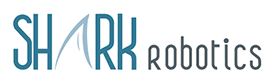
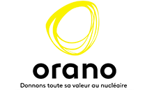
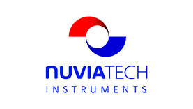
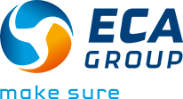
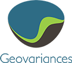
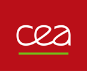
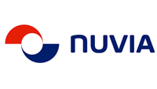
Nos soutiens
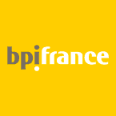
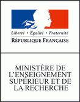
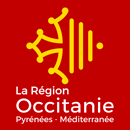
Nos réseaux
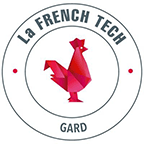
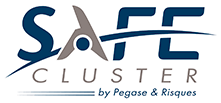